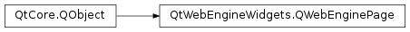

QWebEnginePage¶
Synopsis¶
Functions¶
- def
action(action) - def
backgroundColor() - def
contentsSize() - def
contextMenuData() - def
createStandardContextMenu() - def
devToolsPage() - def
download(url[, filename=”“]) - def
findText(subString[, options=QWebEnginePage.FindFlags()]) - def
hasSelection() - def
icon() - def
iconUrl() - def
inspectedPage() - def
isAudioMuted() - def
load(request) - def
load(url) - def
printToPdf(filePath[, layout=QPageLayout(QPageSize(QPageSize.A4), QPageLayout.Portrait, QMarginsF())]) - def
profile() - def
recentlyAudible() - def
replaceMisspelledWord(replacement) - def
requestedUrl() - def
runJavaScript(scriptSource) - def
runJavaScript(scriptSource, worldId) - def
save(filePath[, format=QWebEngineDownloadItem.MimeHtmlSaveFormat]) - def
scripts() - def
scrollPosition() - def
selectedText() - def
setAudioMuted(muted) - def
setBackgroundColor(color) - def
setContent(data[, mimeType=”“[, baseUrl=QUrl()]]) - def
setDevToolsPage(page) - def
setFeaturePermission(securityOrigin, feature, policy) - def
setHtml(html[, baseUrl=QUrl()]) - def
setInspectedPage(page) - def
setUrl(url) - def
setView(view) - def
setWebChannel(arg__1) - def
setWebChannel(arg__1, worldId) - def
setZoomFactor(factor) - def
settings() - def
title() - def
url() - def
view() - def
webChannel() - def
zoomFactor()
Virtual functions¶
- def
acceptNavigationRequest(url, type, isMainFrame) - def
certificateError(certificateError) - def
chooseFiles(mode, oldFiles, acceptedMimeTypes) - def
createWindow(type) - def
javaScriptAlert(securityOrigin, msg) - def
javaScriptConfirm(securityOrigin, msg) - def
javaScriptConsoleMessage(level, message, lineNumber, sourceID) - def
javaScriptPrompt(securityOrigin, msg, defaultValue, result) - def
triggerAction(action[, checked=false])
Signals¶
- def
audioMutedChanged(muted) - def
authenticationRequired(requestUrl, authenticator) - def
contentsSizeChanged(size) - def
featurePermissionRequestCanceled(securityOrigin, feature) - def
featurePermissionRequested(securityOrigin, feature) - def
fullScreenRequested(fullScreenRequest) - def
geometryChangeRequested(geom) - def
iconChanged(icon) - def
iconUrlChanged(url) - def
linkHovered(url) - def
loadFinished(ok) - def
loadProgress(progress) - def
loadStarted() - def
pdfPrintingFinished(filePath, success) - def
proxyAuthenticationRequired(requestUrl, authenticator, proxyHost) - def
recentlyAudibleChanged(recentlyAudible) - def
renderProcessTerminated(terminationStatus, exitCode) - def
scrollPositionChanged(position) - def
selectionChanged() - def
titleChanged(title) - def
urlChanged(url) - def
windowCloseRequested()
Detailed Description¶
The
PySide2.QtWebEngineWidgets.QWebEnginePageclass provides an object to view and edit web documents.A web engine page holds the contents of an HTML document, the history of navigated links, and actions.
PySide2.QtWebEngineWidgets.QWebEnginePage‘s API is very similar toPySide2.QtWebEngineWidgets.QWebEngineView, as you are still provided with common functions likePySide2.QtWebEngineWidgets.QWebEnginePage.action()(known asPySide2.QtWebEngineWidgets.QWebEngineView.pageAction()() inPySide2.QtWebEngineWidgets.QWebEngineView),PySide2.QtWebEngineWidgets.QWebEnginePage.triggerAction(), andPySide2.QtWebEngineWidgets.QWebEnginePage.findText().A page can be loaded using
PySide2.QtWebEngineWidgets.QWebEnginePage.load()orPySide2.QtWebEngineWidgets.QWebEnginePage.setUrl(). Alternatively, if you have the HTML content readily available, you can usePySide2.QtWebEngineWidgets.QWebEnginePage.setHtml(). The GET method is always used to load URLs.The
PySide2.QtWebEngineWidgets.QWebEnginePageclass also offers methods to retrieve both the URL currently loaded by the page (seePySide2.QtWebEngineWidgets.QWebEnginePage.url()) as well as the URL originally requested to be loaded (seePySide2.QtWebEngineWidgets.QWebEnginePage.requestedUrl()). These methods make possible the retrieval of the URL before and after a DNS resolution or a redirection occurs during the load process. ThePySide2.QtWebEngineWidgets.QWebEnginePage.requestedUrl()also matches to the URL added to the page history (QWebEngineHistory) if load is successful.The title of an HTML page can be accessed with the
PySide2.QtWebEngineWidgets.QWebEnginePage.title()property. Additionally, a page may also specify an icon, which can be accessed using thePySide2.QtWebEngineWidgets.QWebEnginePage.icon()or its URL using thePySide2.QtWebEngineWidgets.QWebEnginePage.iconUrl()property. If the title or the icon changes, the correspondingPySide2.QtWebEngineWidgets.QWebEnginePage.titleChanged(),PySide2.QtWebEngineWidgets.QWebEnginePage.iconChanged()andPySide2.QtWebEngineWidgets.QWebEnginePage.iconUrlChanged()signals will be emitted. ThePySide2.QtWebEngineWidgets.QWebEnginePage.zoomFactor()property enables zooming the contents of the web page by a scale factor.The
PySide2.QtWebEngineWidgets.QWebEnginePage.loadStarted()signal is emitted when the page begins to load, whereas thePySide2.QtWebEngineWidgets.QWebEnginePage.loadProgress()signal is emitted whenever an element of the web page completes loading, such as an embedded image or a script. ThePySide2.QtWebEngineWidgets.QWebEnginePage.loadFinished()signal is emitted when the page contents have been loaded completely, independent of script execution or page rendering. Its argument, eithertrueorfalse, indicates whether or not the load operation succeeded.An HTML document is loaded in a main frame within the web page. If it references child frames (as defined by the
<frame>or<iframe>elements), they are considered part of the content. Child frames are individually accessible only through JavaScript.Web sites define security origin for safely accessing each other’s resources for client-side scripting or databases. An origin consist of a host name, a scheme, and a port number. For example, the sites
http://www.example.com/my/page.htmlandhttp://www.example.com/my/overview.htmlare allowed to share the same database or access each other’s documents when used in HTML frame sets and JavaScript. At the same time,http://www.malicious.com/evil.htmlis prevented from accessing the resources ofhttp://www.example.com/, because they are of a different security origin. By default, local schemes likefile://andqrc://are considered to be in the same security origin, and can access each other’s resources. Local resources are by default restricted from accessing remote content, which means thatfile://will not be able to accesshttp://domain.com/foo.html.Scripts can be executed on the web page by using
PySide2.QtWebEngineWidgets.QWebEnginePage.runJavaScript(), either in the main JavaScript world , along with the rest of the JavaScript coming from the web contents, or in their own isolated world. While the DOM of the page can be accessed from any world, JavaScript variables of a function defined in one world are not accessible from a different one.QWebEngineScript.ScriptWorldIdprovides some predefined IDs for this purpose. Using therunJavaScript()version without the world ID is the same as running the script in theMainWorld.The
FocusOnNavigationEnabledsetting can be used to make the view associated with the page automatically receive focus when a navigation operation occurs (like loading or reloading a page or navigating through history).
-
class
PySide2.QtWebEngineWidgets.QWebEnginePage([parent=Q_NULLPTR])¶ -
class
PySide2.QtWebEngineWidgets.QWebEnginePage(profile[, parent=Q_NULLPTR]) Parameters: - profile –
PySide2.QtWebEngineWidgets.QWebEngineProfile - parent –
PySide2.QtCore.QObject
Constructs an empty
PySide2.QtWebEngineWidgets.QWebEnginePagewith the parentparent.Constructs an empty web engine page in the web engine profile
profilewith the parentparent.If the profile is not the default profile, the caller must ensure that the profile stays alive for as long as the page does.
- profile –
-
PySide2.QtWebEngineWidgets.QWebEnginePage.WebAction¶ This enum describes the types of action which can be performed on the web page.
Actions only have an effect when they are applicable. The availability of actions can be be determined by checking
PySide2.Qt3DInput.Qt3DInput::QAction.isEnabled()on the action returned byPySide2.QtWebEngineWidgets.QWebEnginePage.action().Constant Description QWebEnginePage.NoWebAction No action is triggered. QWebEnginePage.Back Navigate back in the history of navigated links. QWebEnginePage.Forward Navigate forward in the history of navigated links. QWebEnginePage.Stop Stop loading the current page. QWebEnginePage.Reload Reload the current page. QWebEnginePage.ReloadAndBypassCache Reload the current page, but do not use any local cache. QWebEnginePage.Cut Cut the content currently selected into the clipboard. QWebEnginePage.Copy Copy the content currently selected into the clipboard. QWebEnginePage.Paste Paste content from the clipboard. QWebEnginePage.Undo Undo the last editing action. QWebEnginePage.Redo Redo the last editing action. QWebEnginePage.SelectAll Select all content. QWebEnginePage.PasteAndMatchStyle Paste content from the clipboard with current style. QWebEnginePage.OpenLinkInThisWindow Open the current link in the current window. (Added in Qt 5.6) QWebEnginePage.OpenLinkInNewWindow Open the current link in a new window. (Added in Qt 5.6) QWebEnginePage.OpenLinkInNewTab Open the current link in a new tab. (Added in Qt 5.6) QWebEnginePage.OpenLinkInNewBackgroundTab Open the current link in a new background tab. (Added in Qt 5.7) QWebEnginePage.CopyLinkToClipboard Copy the current link to the clipboard. (Added in Qt 5.6) QWebEnginePage.CopyImageToClipboard Copy the clicked image to the clipboard. (Added in Qt 5.6) QWebEnginePage.CopyImageUrlToClipboard Copy the clicked image’s URL to the clipboard. (Added in Qt 5.6) QWebEnginePage.CopyMediaUrlToClipboard Copy the hovered audio or video’s URL to the clipboard. (Added in Qt 5.6) QWebEnginePage.ToggleMediaControls Toggle between showing and hiding the controls for the hovered audio or video element. (Added in Qt 5.6) QWebEnginePage.ToggleMediaLoop Toggle whether the hovered audio or video should loop on completetion or not. (Added in Qt 5.6) QWebEnginePage.ToggleMediaPlayPause Toggle the play/pause state of the hovered audio or video element. (Added in Qt 5.6) QWebEnginePage.ToggleMediaMute Mute or unmute the hovered audio or video element. (Added in Qt 5.6) QWebEnginePage.DownloadLinkToDisk Download the current link to the disk. (Added in Qt 5.6) QWebEnginePage.DownloadImageToDisk Download the highlighted image to the disk. (Added in Qt 5.6) QWebEnginePage.DownloadMediaToDisk Download the hovered audio or video to the disk. (Added in Qt 5.6) QWebEnginePage.InspectElement Trigger any attached Web Inspector to inspect the highlighed element. (Added in Qt 5.6) QWebEnginePage.ExitFullScreen Exit the fullscreen mode. (Added in Qt 5.6) QWebEnginePage.RequestClose Request to close the web page. If defined, the window.onbeforeunloadhandler is run, and the user can confirm or reject to close the page. If the close request is confirmed,windowCloseRequestedis emitted. (Added in Qt 5.6)QWebEnginePage.Unselect Clear the current selection. (Added in Qt 5.7) QWebEnginePage.SavePage Save the current page to disk. MHTML is the default format that is used to store the web page on disk. (Added in Qt 5.7) QWebEnginePage.ViewSource Show the source of the current page in a new tab. (Added in Qt 5.8) QWebEnginePage.ToggleBold Toggles boldness for the selection or at the cursor position. Requires contenteditable="true". (Added in Qt 5.10)QWebEnginePage.ToggleItalic Toggles italics for the selection or at the cursor position. Requires contenteditable="true". (Added in Qt 5.10)QWebEnginePage.ToggleUnderline Toggles underlining of the selection or at the cursor position. Requires contenteditable="true". (Added in Qt 5.10)QWebEnginePage.ToggleStrikethrough Toggles striking through the selection or at the cursor position. Requires contenteditable="true". (Added in Qt 5.10)QWebEnginePage.AlignLeft Aligns the lines containing the selection or the cursor to the left. Requires contenteditable="true". (Added in Qt 5.10)QWebEnginePage.AlignCenter Aligns the lines containing the selection or the cursor at the center. Requires contenteditable="true". (Added in Qt 5.10)QWebEnginePage.AlignRight Aligns the lines containing the selection or the cursor to the right. Requires contenteditable="true". (Added in Qt 5.10)QWebEnginePage.AlignJustified Stretches the lines containing the selection or the cursor so that each line has equal width. Requires contenteditable="true". (Added in Qt 5.10)QWebEnginePage.Indent Indents the lines containing the selection or the cursor. Requires contenteditable="true". (Added in Qt 5.10)QWebEnginePage.Outdent Outdents the lines containing the selection or the cursor. Requires contenteditable="true". (Added in Qt 5.10)QWebEnginePage.InsertOrderedList Inserts an ordered list at the current cursor position, deleting the current selection. Requires contenteditable="true". (Added in Qt 5.10)QWebEnginePage.InsertUnorderedList Inserts an unordered list at the current cursor position, deleting the current selection. Requires contenteditable="true". (Added in Qt 5.10)
-
PySide2.QtWebEngineWidgets.QWebEnginePage.FindFlag¶ This enum describes the options available to the
PySide2.QtWebEngineWidgets.QWebEnginePage.findText()function. The options can be OR-ed together from the following list:Constant Description QWebEnginePage.FindBackward Searches backwards instead of forwards. QWebEnginePage.FindCaseSensitively By default PySide2.QtWebEngineWidgets.QWebEnginePage.findText()works case insensitive. Specifying this option changes the behavior to a case sensitive find operation.
-
PySide2.QtWebEngineWidgets.QWebEnginePage.WebWindowType¶ This enum describes the types of window that can be created by the
PySide2.QtWebEngineWidgets.QWebEnginePage.createWindow()function:Constant Description QWebEnginePage.WebBrowserWindow A complete web browser window. QWebEnginePage.WebBrowserTab A web browser tab. QWebEnginePage.WebDialog A window without decoration. QWebEnginePage.WebBrowserBackgroundTab A web browser tab without hiding the current visible WebEngineView . (Added in Qt 5.7)
-
PySide2.QtWebEngineWidgets.QWebEnginePage.PermissionPolicy¶ This enum describes the permission policies that the user may set for data or device access:
Constant Description QWebEnginePage.PermissionUnknown It is unknown whether the user grants or denies permission. QWebEnginePage.PermissionGrantedByUser The user has granted permission. QWebEnginePage.PermissionDeniedByUser The user has denied permission.
This enum describes the type of a navigation request:
Constant Description QWebEnginePage.NavigationTypeLinkClicked The navigation request resulted from a clicked link. QWebEnginePage.NavigationTypeTyped The navigation request resulted from an explicitly loaded URL. QWebEnginePage.NavigationTypeFormSubmitted The navigation request resulted from a form submission. QWebEnginePage.NavigationTypeBackForward The navigation request resulted from a back or forward action. QWebEnginePage.NavigationTypeReload The navigation request resulted from a reload action. QWebEnginePage.NavigationTypeOther The navigation request was triggered by other means not covered by the above.
-
PySide2.QtWebEngineWidgets.QWebEnginePage.Feature¶ This enum describes the platform feature access categories that the user may be asked to grant or deny access to:
Constant Description QWebEnginePage.Geolocation Location hardware or service. QWebEnginePage.MediaAudioCapture Audio capture devices, such as microphones. QWebEnginePage.MediaVideoCapture Video devices, such as cameras. QWebEnginePage.MediaAudioVideoCapture Both audio and video capture devices. QWebEnginePage.MouseLock Mouse locking, which locks the mouse pointer to the web view and is typically used in games. QWebEnginePage.DesktopVideoCapture Video output capture, that is, the capture of the user’s display, for screen sharing purposes for example. (Added in Qt 5.10) QWebEnginePage.DesktopAudioVideoCapture Both audio and video output capture. (Added in Qt 5.10)
-
PySide2.QtWebEngineWidgets.QWebEnginePage.FileSelectionMode¶ This enum indicates whether the implementation of the
PySide2.QtWebEngineWidgets.QWebEnginePage.chooseFiles()function should return only one file or may return multiple files:Constant Description QWebEnginePage.FileSelectOpen Return only one file name. QWebEnginePage.FileSelectOpenMultiple Return multiple file names.
-
PySide2.QtWebEngineWidgets.QWebEnginePage.JavaScriptConsoleMessageLevel¶ This enum describes the different severity levels a JavaScript console message can have:
Constant Description QWebEnginePage.InfoMessageLevel The message is purely informative and can safely be ignored. QWebEnginePage.WarningMessageLevel The message informs about unexpected behavior or errors that may need attention. QWebEnginePage.ErrorMessageLevel The message indicates there has been an error.
-
PySide2.QtWebEngineWidgets.QWebEnginePage.RenderProcessTerminationStatus¶ This enum describes the status with which the render process terminated:
Constant Description QWebEnginePage.NormalTerminationStatus The render process terminated normally. QWebEnginePage.AbnormalTerminationStatus The render process terminated with with a non-zero exit status. QWebEnginePage.CrashedTerminationStatus The render process crashed, for example because of a segmentation fault. QWebEnginePage.KilledTerminationStatus The render process was killed, for example by SIGKILLor task manager kill.
Parameters: - url –
PySide2.QtCore.QUrl - type –
PySide2.QtWebEngineWidgets.QWebEnginePage.NavigationType - isMainFrame –
PySide2.QtCore.bool
Return type: PySide2.QtCore.boolThis function is called upon receiving a request to navigate to the specified
urlby means of the specified navigation typetype.isMainFrameindicates whether the request corresponds to the main frame or a child frame. If the function returnstrue, the navigation request is accepted andurlis loaded. The default implementation accepts all navigation requests.This function is called for absolute URLs that are prefixed with
http://orhttps://and for unrecognized schemes, such asmailto:, which will be handled byPySide2.QtGui.QDesktopServicesif accepted. To have this function called also upon receiving navigation requests to local URLs, prefix the URLs withhttp://.Navigation requests can be delegated to the Qt application instead of having the HTML handler engine process them by overloading this function. This is necessary when an HTML document is used as part of the user interface, and not to display external data, for example, when displaying a list of results.
The
PySide2.QtWebEngineCore.QWebEngineUrlRequestInterceptorclass offers further options for intercepting and manipulating requests.- url –
-
PySide2.QtWebEngineWidgets.QWebEnginePage.action(action)¶ Parameters: action – PySide2.QtWebEngineWidgets.QWebEnginePage.WebActionReturn type: PySide2.QtWidgets.QActionReturns a
PySide2.QtWidgets.QActionfor the specifiedQWebEnginePage.WebActionaction.The action is owned by the
PySide2.QtWebEngineWidgets.QWebEnginePagebut you can customize the look by changing its properties.PySide2.QtWebEngineWidgets.QWebEnginePagealso takes care of implementing the action, so that upon triggering the corresponding action is performed on the page.
-
PySide2.QtWebEngineWidgets.QWebEnginePage.audioMutedChanged(muted)¶ Parameters: muted – PySide2.QtCore.bool
-
PySide2.QtWebEngineWidgets.QWebEnginePage.authenticationRequired(requestUrl, authenticator)¶ Parameters: - requestUrl –
PySide2.QtCore.QUrl - authenticator –
PySide2.QtNetwork.QAuthenticator
- requestUrl –
-
PySide2.QtWebEngineWidgets.QWebEnginePage.backgroundColor()¶ Return type: PySide2.QtGui.QColor
-
PySide2.QtWebEngineWidgets.QWebEnginePage.certificateError(certificateError)¶ Parameters: certificateError – PySide2.QtWebEngineWidgets.QWebEngineCertificateErrorReturn type: PySide2.QtCore.boolThis function is called when an invalid certificate error is raised while loading a given request.
The
certificateErrorparameter contains information about the certificate and details of the error.Return
trueto ignore the error and complete the request. Returnfalseto stop loading the request.
-
PySide2.QtWebEngineWidgets.QWebEnginePage.chooseFiles(mode, oldFiles, acceptedMimeTypes)¶ Parameters: - mode –
PySide2.QtWebEngineWidgets.QWebEnginePage.FileSelectionMode - oldFiles – list of strings
- acceptedMimeTypes – list of strings
Return type: list of strings
This function is called when the web content requests a file name, for example as a result of the user clicking on a file upload button in an HTML form.
modeindicates whether only one file or multiple files are expected to be returned.A suggested filename may be provided as the first entry of
oldFiles.acceptedMimeTypesis ignored by the default implementation, but might be used by overrides.- mode –
-
PySide2.QtWebEngineWidgets.QWebEnginePage.contentsSize()¶ Return type: PySide2.QtCore.QSizeF
-
PySide2.QtWebEngineWidgets.QWebEnginePage.contentsSizeChanged(size)¶ Parameters: size – PySide2.QtCore.QSizeF
-
PySide2.QtWebEngineWidgets.QWebEnginePage.contextMenuData()¶ Return type: PySide2.QtWebEngineWidgets.QWebEngineContextMenuDataReturns additional data about the current context menu. It is only guaranteed to be valid during the call to the
QWebEngineView.contextMenuEvent()handler of the associatedPySide2.QtWebEngineWidgets.QWebEngineView.
-
PySide2.QtWebEngineWidgets.QWebEnginePage.createStandardContextMenu()¶ Return type: PySide2.QtWidgets.QMenuCreates the standard context menu which is shown when the user clicks on the web page with the right mouse button. It is called from the default
PySide2.QtWidgets.QWidget.contextMenuEvent()handler. The popup menu’s ownership is transferred to the caller.Returns
nullptrif the context menu data is not initialized, for example when it is called when there is actually no context menu requested.
-
PySide2.QtWebEngineWidgets.QWebEnginePage.createWindow(type)¶ Parameters: type – PySide2.QtWebEngineWidgets.QWebEnginePage.WebWindowTypeReturn type: PySide2.QtWebEngineWidgets.QWebEnginePageThis function is called to create a new window of the specified
type. For example, when a JavaScript program requests to open a document in a new window.If the new window can be created, the new window’s
PySide2.QtWebEngineWidgets.QWebEnginePageis returned; otherwise a null pointer is returned.If the view associated with the web page is a
PySide2.QtWebEngineWidgets.QWebEngineViewobject, then the default implementation forwards the request toQWebEngineView.createWindow(); otherwise it returns a null pointer.Note
In the cases when the window creation is being triggered by JavaScript, apart from reimplementing this method the application must also set
QWebEngineSettings.JavascriptCanOpenWindowstotruein order for the method to get called.See also
-
PySide2.QtWebEngineWidgets.QWebEnginePage.devToolsPage()¶ Return type: PySide2.QtWebEngineWidgets.QWebEnginePageReturns the page that is hosting the developer tools of this page, if any.
Returns
nullptrif no developer tools page is set.
-
PySide2.QtWebEngineWidgets.QWebEnginePage.download(url[, filename=""])¶ Parameters: - url –
PySide2.QtCore.QUrl - filename – unicode
Downloads the resource from the location given by
urlto a local file.If
filenameis given, it is used as the suggested file name. If it is relative, the file is saved in the standard download location with the given name. If it is a null or emptyPySide2.QtCore.QString, the default file name is used.This will emit
QWebEngineProfile.downloadRequested()after the download has started.- url –
-
PySide2.QtWebEngineWidgets.QWebEnginePage.featurePermissionRequestCanceled(securityOrigin, feature)¶ Parameters: - securityOrigin –
PySide2.QtCore.QUrl - feature –
PySide2.QtWebEngineWidgets.QWebEnginePage.Feature
- securityOrigin –
-
PySide2.QtWebEngineWidgets.QWebEnginePage.featurePermissionRequested(securityOrigin, feature)¶ Parameters: - securityOrigin –
PySide2.QtCore.QUrl - feature –
PySide2.QtWebEngineWidgets.QWebEnginePage.Feature
- securityOrigin –
-
PySide2.QtWebEngineWidgets.QWebEnginePage.findText(subString[, options=QWebEnginePage.FindFlags()])¶ Parameters: - subString – unicode
- options –
PySide2.QtWebEngineWidgets.QWebEnginePage.FindFlags
-
PySide2.QtWebEngineWidgets.QWebEnginePage.fullScreenRequested(fullScreenRequest)¶ Parameters: fullScreenRequest – PySide2.QtWebEngineWidgets.QWebEngineFullScreenRequest
-
PySide2.QtWebEngineWidgets.QWebEnginePage.geometryChangeRequested(geom)¶ Parameters: geom – PySide2.QtCore.QRect
-
PySide2.QtWebEngineWidgets.QWebEnginePage.hasSelection()¶ Return type: PySide2.QtCore.bool
-
PySide2.QtWebEngineWidgets.QWebEnginePage.icon()¶ Return type: PySide2.QtGui.QIcon
-
PySide2.QtWebEngineWidgets.QWebEnginePage.iconChanged(icon)¶ Parameters: icon – PySide2.QtGui.QIcon
-
PySide2.QtWebEngineWidgets.QWebEnginePage.iconUrl()¶ Return type: PySide2.QtCore.QUrl
-
PySide2.QtWebEngineWidgets.QWebEnginePage.iconUrlChanged(url)¶ Parameters: url – PySide2.QtCore.QUrl
-
PySide2.QtWebEngineWidgets.QWebEnginePage.inspectedPage()¶ Return type: PySide2.QtWebEngineWidgets.QWebEnginePageReturns the page this page is inspecting, if any.
Returns
nullptrif this page is not a developer tools page.
-
PySide2.QtWebEngineWidgets.QWebEnginePage.isAudioMuted()¶ Return type: PySide2.QtCore.bool
-
PySide2.QtWebEngineWidgets.QWebEnginePage.javaScriptAlert(securityOrigin, msg)¶ Parameters: - securityOrigin –
PySide2.QtCore.QUrl - msg – unicode
This function is called whenever a JavaScript program running in a frame affiliated with
securityOrigincalls thealert()function with the messagemsg.The default implementation shows the message,
msg, withQMessageBox.information.- securityOrigin –
-
PySide2.QtWebEngineWidgets.QWebEnginePage.javaScriptConfirm(securityOrigin, msg)¶ Parameters: - securityOrigin –
PySide2.QtCore.QUrl - msg – unicode
Return type: PySide2.QtCore.boolThis function is called whenever a JavaScript program running in a frame affiliated with
securityOrigincalls theconfirm()function with the messagemsg. Returnstrueif the user confirms the message; otherwise returnsfalse.It is also called when the
onbeforeunloadhandler is requesting a confirmation before leaving a page.The default implementation executes the query using
QMessageBox.informationwithQMessageBox.OkandQMessageBox.Cancelbuttons.- securityOrigin –
-
PySide2.QtWebEngineWidgets.QWebEnginePage.javaScriptConsoleMessage(level, message, lineNumber, sourceID)¶ Parameters: - level –
PySide2.QtWebEngineWidgets.QWebEnginePage.JavaScriptConsoleMessageLevel - message – unicode
- lineNumber –
PySide2.QtCore.int - sourceID – unicode
This function is called when a JavaScript program tries to print the
messageto the web browser’s console.For example, in case of evaluation errors the source URL may be provided in
sourceIDas well as thelineNumber.levelindicates the severity of the event that triggered the message. That is, whether it was triggered by an error or a less severe event.Since Qt 5.6, the default implementation logs the messages in a
jslogging category.See also
Console Logging
- level –
-
PySide2.QtWebEngineWidgets.QWebEnginePage.javaScriptPrompt(securityOrigin, msg, defaultValue, result)¶ Parameters: - securityOrigin –
PySide2.QtCore.QUrl - msg – unicode
- defaultValue – unicode
- result – unicode
Return type: PySide2.QtCore.boolThis function is called whenever a JavaScript program running in a frame affiliated with
securityOrigintries to prompt the user for input. The program may provide an optional message,msg, as well as a default value for the input indefaultValue.If the prompt was cancelled by the user, the implementation should return
false; otherwise the result should be written toresultandtrueshould be returned. If the prompt was not cancelled by the user, the implementation should returntrueand the result string must not be null.The default implementation uses
QInputDialog.getText().- securityOrigin –
-
PySide2.QtWebEngineWidgets.QWebEnginePage.linkHovered(url)¶ Parameters: url – unicode
-
PySide2.QtWebEngineWidgets.QWebEnginePage.load(url)¶ Parameters: url – PySide2.QtCore.QUrlLoads
urlinto this page.Note
The view remains the same until enough data has arrived to display the new URL.
-
PySide2.QtWebEngineWidgets.QWebEnginePage.load(request) Parameters: request – PySide2.QtWebEngineCore.QWebEngineHttpRequestIssues the specified
requestand loads the response.
-
PySide2.QtWebEngineWidgets.QWebEnginePage.loadFinished(ok)¶ Parameters: ok – PySide2.QtCore.bool
-
PySide2.QtWebEngineWidgets.QWebEnginePage.loadProgress(progress)¶ Parameters: progress – PySide2.QtCore.int
-
PySide2.QtWebEngineWidgets.QWebEnginePage.loadStarted()¶
-
PySide2.QtWebEngineWidgets.QWebEnginePage.pdfPrintingFinished(filePath, success)¶ Parameters: - filePath – unicode
- success –
PySide2.QtCore.bool
-
PySide2.QtWebEngineWidgets.QWebEnginePage.printToPdf(filePath[, layout=QPageLayout(QPageSize(QPageSize.A4), QPageLayout.Portrait, QMarginsF())])¶ Parameters: - filePath – unicode
- layout –
PySide2.QtGui.QPageLayout
Renders the current content of the page into a PDF document and saves it in the location specified in
filePath. The page size and orientation of the produced PDF document are taken from the values specified inpageLayout.This method issues an asynchronous request for printing the web page into a PDF and returns immediately. To be informed about the result of the request, connect to the signal
PySide2.QtWebEngineWidgets.QWebEnginePage.pdfPrintingFinished().If a file already exists at the provided file path, it will be overwritten.
-
PySide2.QtWebEngineWidgets.QWebEnginePage.profile()¶ Return type: PySide2.QtWebEngineWidgets.QWebEngineProfileReturns the web engine profile the page belongs to.
-
PySide2.QtWebEngineWidgets.QWebEnginePage.proxyAuthenticationRequired(requestUrl, authenticator, proxyHost)¶ Parameters: - requestUrl –
PySide2.QtCore.QUrl - authenticator –
PySide2.QtNetwork.QAuthenticator - proxyHost – unicode
- requestUrl –
-
PySide2.QtWebEngineWidgets.QWebEnginePage.recentlyAudible()¶ Return type: PySide2.QtCore.bool
-
PySide2.QtWebEngineWidgets.QWebEnginePage.recentlyAudibleChanged(recentlyAudible)¶ Parameters: recentlyAudible – PySide2.QtCore.bool
-
PySide2.QtWebEngineWidgets.QWebEnginePage.renderProcessTerminated(terminationStatus, exitCode)¶ Parameters: - terminationStatus –
PySide2.QtWebEngineWidgets.QWebEnginePage.RenderProcessTerminationStatus - exitCode –
PySide2.QtCore.int
- terminationStatus –
-
PySide2.QtWebEngineWidgets.QWebEnginePage.replaceMisspelledWord(replacement)¶ Parameters: replacement – unicode Replace the current misspelled word with
replacement.The current misspelled word can be found in
QWebEngineContextMenuData.misspelledWord(), and suggested replacements inQWebEngineContextMenuData.spellCheckerSuggestions().
-
PySide2.QtWebEngineWidgets.QWebEnginePage.requestedUrl()¶ Return type: PySide2.QtCore.QUrl
-
PySide2.QtWebEngineWidgets.QWebEnginePage.runJavaScript(scriptSource)¶ Parameters: scriptSource – unicode
-
PySide2.QtWebEngineWidgets.QWebEnginePage.runJavaScript(scriptSource, worldId) Parameters: - scriptSource – unicode
- worldId –
PySide2.QtCore.quint32
-
PySide2.QtWebEngineWidgets.QWebEnginePage.save(filePath[, format=QWebEngineDownloadItem.MimeHtmlSaveFormat])¶ Parameters: - filePath – unicode
- format –
PySide2.QtWebEngineWidgets.QWebEngineDownloadItem.SavePageFormat
Save the currently loaded web page to disk.
The web page is saved to
filePathin the specifiedformat.This is a short cut for the following actions:
- Trigger the Save web action.
- Accept the next download item and set the specified file path and save format.
This function issues an asynchronous download request for the web page and returns immediately.
See also
QWebEngineDownloadItem.SavePageFormat
-
PySide2.QtWebEngineWidgets.QWebEnginePage.scripts()¶ Return type: PySide2.QtWebEngineWidgets.QWebEngineScriptCollectionReturns the collection of scripts that are injected into the page.
In addition, a page might also execute scripts added through
QWebEngineProfile.scripts().See also
PySide2.QtWebEngineWidgets.QWebEngineScriptCollectionPySide2.QtWebEngineWidgets.QWebEngineScript
-
PySide2.QtWebEngineWidgets.QWebEnginePage.scrollPosition()¶ Return type: PySide2.QtCore.QPointF
-
PySide2.QtWebEngineWidgets.QWebEnginePage.scrollPositionChanged(position)¶ Parameters: position – PySide2.QtCore.QPointF
-
PySide2.QtWebEngineWidgets.QWebEnginePage.selectedText()¶ Return type: unicode
-
PySide2.QtWebEngineWidgets.QWebEnginePage.selectionChanged()¶
-
PySide2.QtWebEngineWidgets.QWebEnginePage.setAudioMuted(muted)¶ Parameters: muted – PySide2.QtCore.bool
-
PySide2.QtWebEngineWidgets.QWebEnginePage.setBackgroundColor(color)¶ Parameters: color – PySide2.QtGui.QColor
-
PySide2.QtWebEngineWidgets.QWebEnginePage.setContent(data[, mimeType=""[, baseUrl=QUrl()]])¶ Parameters: - data –
PySide2.QtCore.QByteArray - mimeType – unicode
- baseUrl –
PySide2.QtCore.QUrl
Sets the content of the web page to
data. If themimeTypeargument is empty, it is assumed that the content istext/plain,charset=US-ASCII.External objects referenced in the content are located relative to
baseUrl.The
datais loaded immediately; external objects are loaded asynchronously.Note
This method will not affect session or global history for the page.
Warning
The content will be percent encoded before being sent to the renderer via IPC. This may increase its size. The maximum size of the percent encoded content is 2 megabytes minus 6 bytes plus the length of the mime type string.
See also
toHtml()PySide2.QtWebEngineWidgets.QWebEnginePage.setHtml()- data –
-
PySide2.QtWebEngineWidgets.QWebEnginePage.setDevToolsPage(page)¶ Parameters: page – PySide2.QtWebEngineWidgets.QWebEnginePageBinds
devToolsPageto be the developer tools of this page. TriggersdevToolsPageto navigate to an internal URL with the developer tools.This is the same as calling
PySide2.QtWebEngineWidgets.QWebEnginePage.setInspectedPage()ondevToolsPagewiththisas argument.
-
PySide2.QtWebEngineWidgets.QWebEnginePage.setFeaturePermission(securityOrigin, feature, policy)¶ Parameters: - securityOrigin –
PySide2.QtCore.QUrl - feature –
PySide2.QtWebEngineWidgets.QWebEnginePage.Feature - policy –
PySide2.QtWebEngineWidgets.QWebEnginePage.PermissionPolicy
Sets the permission for the web site identified by
securityOriginto usefeaturetopolicy.Note
Call this method on the
PySide2.QtWebEngineWidgets.QWebEnginePage.featurePermissionRequested()signal, as it is meant to serve pending feature requests only. Setting feature permissions ahead of a request has no effect.- securityOrigin –
-
PySide2.QtWebEngineWidgets.QWebEnginePage.setHtml(html[, baseUrl=QUrl()])¶ Parameters: - html – unicode
- baseUrl –
PySide2.QtCore.QUrl
Sets the content of this page to
html.baseUrlis optional and used to resolve relative URLs in the document, such as referenced images or stylesheets.The
htmlis loaded immediately; external objects are loaded asynchronously.If a script in the
htmlruns longer than the default script timeout (currently 10 seconds), for example due to being blocked by a modal JavaScript alert dialog, this method will return as soon as possible after the timeout and any subsequenthtmlwill be loaded asynchronously.When using this method, the web engine assumes that external resources, such as JavaScript programs or style sheets, are encoded in UTF-8 unless otherwise specified. For example, the encoding of an external script can be specified through the charset attribute of the HTML script tag. It is also possible for the encoding to be specified by the web server.
This is a convenience function equivalent to
PySide2.QtWebEngineWidgets.QWebEnginePage.setContent()(html, “text/html”, baseUrl).Note
This method will not affect session or global history for the page.
Warning
This function works only for HTML, for other mime types (such as XHTML and SVG)
PySide2.QtWebEngineWidgets.QWebEnginePage.setContent()should be used instead.Warning
The content will be percent encoded before being sent to the renderer via IPC. This may increase its size. The maximum size of the percent encoded content is 2 megabytes minus 30 bytes.
-
PySide2.QtWebEngineWidgets.QWebEnginePage.setInspectedPage(page)¶ Parameters: page – PySide2.QtWebEngineWidgets.QWebEnginePageNavigates this page to an internal URL that is the developer tools of
page.This is the same as calling
PySide2.QtWebEngineWidgets.QWebEnginePage.setDevToolsPage()onpagewiththisas argument.
-
PySide2.QtWebEngineWidgets.QWebEnginePage.setUrl(url)¶ Parameters: url – PySide2.QtCore.QUrl
-
PySide2.QtWebEngineWidgets.QWebEnginePage.setView(view)¶ Parameters: view – PySide2.QtWidgets.QWidgetSets the
viewthat is associated with the web page.
-
PySide2.QtWebEngineWidgets.QWebEnginePage.setWebChannel(arg__1, worldId)¶ Parameters: - arg__1 –
PySide2.QtWebChannel.QWebChannel - worldId –
PySide2.QtCore.uint
Sets the web channel instance to be used by this page to
channeland connects it to web engine’s transport using Chromium IPC messages. The transport is exposed in the JavaScript worldworldIdasqt.webChannelTransport, which should be used when using the Qt WebChannel JavaScript API .Note
The page does not take ownership of the channel object.
Note
Only one web channel can be installed per page, setting one even in another JavaScript world uninstalls any already installed web channel.
See also
PySide2.QtWebEngineWidgets.QWebEnginePage.webChannel()QWebEngineScript.ScriptWorldId- arg__1 –
-
PySide2.QtWebEngineWidgets.QWebEnginePage.setWebChannel(arg__1) Parameters: arg__1 – PySide2.QtWebChannel.QWebChannelThis is an overloaded function.
Sets the web channel instance to be used by this page to
channeland installs it in the main JavaScript world.With this method the web channel can be accessed by web page content. If the content is not under your control and might be hostile, this could be a security issue and you should consider installing it in a private JavaScript world.
See also
QWebEngineScript.MainWorld
-
PySide2.QtWebEngineWidgets.QWebEnginePage.setZoomFactor(factor)¶ Parameters: factor – PySide2.QtCore.qreal
-
PySide2.QtWebEngineWidgets.QWebEnginePage.settings()¶ Return type: PySide2.QtWebEngineWidgets.QWebEngineSettingsReturns a pointer to the page’s settings object.
See also
-
PySide2.QtWebEngineWidgets.QWebEnginePage.title()¶ Return type: unicode
-
PySide2.QtWebEngineWidgets.QWebEnginePage.titleChanged(title)¶ Parameters: title – unicode
-
PySide2.QtWebEngineWidgets.QWebEnginePage.triggerAction(action[, checked=false])¶ Parameters: - action –
PySide2.QtWebEngineWidgets.QWebEnginePage.WebAction - checked –
PySide2.QtCore.bool
This function can be called to trigger the specified
action. It is also called by Qt if the user triggers the action, for example through a context menu item.If
actionis a checkable action, thencheckedspecifies whether the action is toggled or not.- action –
-
PySide2.QtWebEngineWidgets.QWebEnginePage.url()¶ Return type: PySide2.QtCore.QUrl
-
PySide2.QtWebEngineWidgets.QWebEnginePage.urlChanged(url)¶ Parameters: url – PySide2.QtCore.QUrl
-
PySide2.QtWebEngineWidgets.QWebEnginePage.view()¶ Return type: PySide2.QtWidgets.QWidgetReturns the view widget that is associated with the web page.
-
PySide2.QtWebEngineWidgets.QWebEnginePage.webChannel()¶ Return type: PySide2.QtWebChannel.QWebChannelReturns a pointer to the web channel instance used by this page or a null pointer if none was set. This channel automatically uses the internal web engine transport mechanism over Chromium IPC that is exposed in the JavaScript context of this page as
qt.webChannelTransport.
-
PySide2.QtWebEngineWidgets.QWebEnginePage.windowCloseRequested()¶
-
PySide2.QtWebEngineWidgets.QWebEnginePage.zoomFactor()¶ Return type: PySide2.QtCore.qreal
© 2018 The Qt Company Ltd. Documentation contributions included herein are the copyrights of their respective owners. The documentation provided herein is licensed under the terms of the GNU Free Documentation License version 1.3 as published by the Free Software Foundation. Qt and respective logos are trademarks of The Qt Company Ltd. in Finland and/or other countries worldwide. All other trademarks are property of their respective owners.